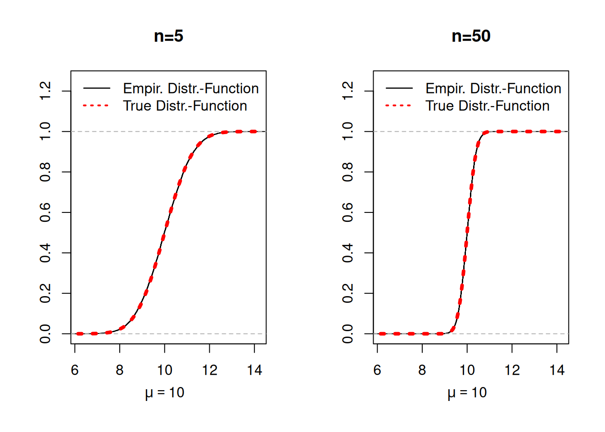

## True parameter value
mu <- 10
## Number of Monte Carlo repetitions:
B <- 10000
## Sequence of different sample sizes:
n_seq <- c(5, 50)
## #############################################
## 1st Coding-Possibility: Using a for() loop ##
## #############################################
## Set seed for the random number generator to get reproducible results
set.seed(3)
# Container for the generated estimates:
estimates_mat <- matrix(NA, nrow = B, ncol = length(n_seq))
for(j in 1:length(n_seq)){
## select the sample size
n <- n_seq[j]
for(b in 1:B){
## generate realization of the random sample
X_sample <- rnorm(n = n, mean = mu, sd = sqrt(5))
## compute the sample mean and safe it
estimates_mat[b,j] <- mean(X_sample)
}
}
## ############################################
## 2nd Coding-Possibility: Using replicate() ##
## ############################################
## Set seed for the random number generator to get reproducible results
set.seed(3)
## Function that generates estimator realizations
my_estimates_generator <- function(n){
X_sample <- rnorm(n = n, mean = mu, sd = sqrt(5))
## compute the sample mean realization
return(mean(X_sample))
}
estimates_mat <- cbind(
replicate(B, my_estimates_generator(n = n_seq[1])),
replicate(B, my_estimates_generator(n = n_seq[2]))
)3 Estimation Theory and Monte Carlo Simulations
Learning outcomes of this chapter:
- You know the basic concepts of estimation theory and you can apply them to specific estimators.
- Estimate vs estimator
- Estimator’s distribution, bias, variance, and standard error
- You know how to use a Monte Carlo simulation to check the accuracy (bias, variance, and standard error) of a given (simple) estimator
3.1 Estimator vs. Estimate
Let’s assume that we have an iid random sample \(\{X_1,\dots,X_n\}\) with \[ X_i\overset{iid}{\sim} F_X \] for all \(i=1,\dots,n\), and let \(\theta\in\mathbb{R}\) denote some parameter (e.g. the mean or the variance) of the distribution \(F_X\).
An estimator \(\hat\theta_n\) of \(\theta\) is a function of the random sample \(X_1,\dots,X_n\), \[ \hat\theta_n:=\hat\theta(X_1,\dots,X_n). \]
Since \(\hat\theta_n\) is a function of the random variables \(X_1,\dots,X_n\), the estimator \(\hat\theta_n\) is itself a random variable.
The observed data \(X_{1,obs},\dots,X_{n,obs}\) is assumed to be a certain realization of the random sample \(X_1,\dots,X_n\). The corresponding realization of the estimator is called an estimate of \(\theta\) \[ \hat\theta_{n,obs}=\hat\theta(X_{1,obs},\dots,X_{n,obs}). \]
Examples:
The sample mean as an estimator of the population mean \(E(X_i) =\theta\): \[ \hat\theta_n=\bar{X}_n=\frac{1}{n}\sum_{i=1}^nX_i \]
The sample variance as an estimator of the population variance \(Var(X_i) =\theta\): \[ \hat\theta_n=s_{UB}^2=\frac{1}{n-1}\sum_{i=1}^n\left(X_i - \bar{X}_n\right)^2 \]
Note
Often we do not use a distinguishing notation, but denote both the estimator and its realization as \(\hat\theta_{n}\). This ambiguity is often convenient since both points of views can make sense in a given context.
3.2 Deriving the Distribution of Estimators
Usually, we do not know the distribution \(F_X\) of the random sample \(X_1,\dots,X_n\) and thus we neither know the value of \(\theta\) nor the distribution of the estimator \[ \hat\theta_n=\hat\theta(X_1,\dots,X_n). \] This is the fundamental statistical problem that we need to overcome in statistical inference (estimating \(\theta\), hypothesis testing about \(\theta\), etc.).
There are (roughly) three different possibilities to derive/approximate the distribution of an estimator \(\hat\theta_n:\)
- Option 1: Mathematical derivation using a complete distributional assumption on \(F_X\). Assuming a certain distribution \(F_X\) for the random sample \(X_1,\dots,X_n\) may allow us to derive mathematically the exact distribution of \(\hat\theta_n\) for given sample sizes \(n.\)
➡️ We consider this option in Chapter 5.- Pro: If the distributional assumption is correct, one has exact inference for each sample size \(n\).
- Con: This option can fail miserably if the distributional assumption on \(F_X\) is wrong.
- Con: This option is often only possible for rather simple distributions \(F_X\) like the normal distribution.
- Option 2: Mathematical derivation using only an incomplete distributional assumption on \(F_X\) and asymptotic statistics. Large sample \((n\to\infty)\) approximations (i.e. laws of large numbers and central limit theorems) often allows us to derive the approximate distribution of \(\hat\theta_n\) for large sample sizes \(n.\)
➡️ We consider this option in Chapter 6.- Pro: Only a few qualitative distributional assumptions are needed. (Typically: A random sample with finite variances.)
- Con: The derived asymptotic (\(n\to\infty\)) distribution is only exact for the practically impossible case where \(n=\infty\) and thus can fail to approximate the exact distribution of \(\hat\theta_n\) for given (finite) sample sizes \(n\); particularly if \(n\) is small.
- Pro: Only a few qualitative distributional assumptions are needed. (Typically: A random sample with finite variances.)
- Option 3: Monte Carlo (MC) Simulations using a complete distributional assumption on \(F_X\). Assuming a certain distribution \(F_X\) for the random sample \(X_1,\dots,X_n\) we can approximate (with arbitrary precision) the exact distribution of \(\hat\theta_n\) for given sample sizes \(n;\) see the Algorithm “MC-Simulation”.
➡️ We use this option to check the behavior of estimators under different scenarios for \(F_X\) and \(n\) throughout the rest of this script.
- Pro: Works for a basically every distribution \(F_X\) and sample size \(n.\)
- Con: This option can fail miserably if the distributional assumption on \(F_X\) is wrong.
- Pro: Works for a basically every distribution \(F_X\) and sample size \(n.\)
Algorithm “MC-Simulation”:
1. Step: Generate realizations of \(\hat{\theta}_n\). Use a (pseudo-)random number generator to draw a large number of \(B\) (e.g. \(B=10,000\)) many realizations of the random sample \(\{X_1,\dots,X_n\}\) for a given distribution \(F_X\) and a given sample size \(n:\) \[\begin{align*}
&(X_{1,1,obs},\dots,X_{n,1,obs})\\
&(X_{1,2,obs},\dots,X_{n,2,obs})\\
& \hspace{2cm}\vdots \\
&(X_{1,B,obs},\dots,X_{n,B,obs})
\end{align*}\] Compute for each realization of the random sample a realization of \(\hat{\theta}_n:\) \[\begin{align*}
\hat\theta_{n,1,obs} &= \hat\theta(X_{1,1,obs},\dots,X_{n,1,obs})\\
\hat\theta_{n,2,obs} &= \hat\theta(X_{1,2,obs},\dots,X_{n,2,obs})\\
&\vdots\\
\hat\theta_{n,B,obs} &= \hat\theta(X_{1,B,obs},\dots,X_{n,B,obs})
\end{align*}\] 2. Step: Approximate the distribution of \(\hat{\theta}_n\) (or a features of it). Use the realizations \(\hat\theta_{n,1,obs},\dots,\hat\theta_{n,B,obs}\) to approximate the exact distribution of \(\hat\theta_n\) for a given \(F_X\) and a give sample size \(n.\)
Note
Step 2 of the above algorithm works, since the empirical distribution function \[ \hat{F}_{\hat{\theta}_n,B}(x)=\frac{1}{B}\sum_{j=1}^BI_{(\hat\theta_{n,1,obs} \leq x)} \] approximates the true (unknown) distribution function of \(\hat{\theta}_n\) \[ F_{\hat{\theta}_n}(x)=P(\hat\theta_{n} \leq x) \] arbitrarily well as \(B\to\infty.\)
This hold true, since by the famous Glivenko–Cantelli theorem
\[
\sup_x\left| \hat{F}_{\hat{\theta}_n,B}(x) - F_{\hat{\theta}_n}(x)\right|\to 0\quad\text{as}\quad B\to\infty.
\] almost surely as \(B\to\infty.\)
Instead of approximating the whole distribution of \(\hat{\theta}_n,\) we may only be interested in approximating specific features of the this distribution, such as:
- the bias of \(\hat{\theta}_n\)
- the variance of \(\hat{\theta}_n\)
- the standard error of \(\hat{\theta}_n\)
- the mean squared error of \(\hat{\theta}_n\)
- etc.
Note: These features are simple functionals of \(\hat{F}_{\hat{\theta}_n,B},\) and thus can also be approximated arbitrarily well as \(B\to\infty.\)
3.2.1 Example: Sample Mean \(\bar{X}_n\)
Let \(\{X_1,\dots,X_n\}\) be an iid random sample with \[ X_i\overset{iid}{\sim} F_X, \] where
- \(F_X\) is a normal distribution \(\mathcal{N}(\mu, \sigma^2)\) with
- mean \((\theta=)\mu=10\) and
- variance \(\sigma^2=5\).
To estimate the (usually unknown) mean value \(\mu=10,\) we use the sample mean estimator \[ \bar{X}_n = \frac{1}{n}\sum_{i=1}^n X_i \]
We consider two sample sizes \(n=5\) and \(n=50.\)
Mathematical Derivation using the Distributional Assumptions
Here we have specified the distribution \(F_X\) completely by setting \(F_X=\mathcal{N}(\mu=10,\sigma^2=5).\) This is such a simple case, that we can actually use mathematical derivations to derive the distribution of \(\bar{X}_n.\) (Often, this is not possible.)
Observe that since \(X_i\overset{\text{iid}}{\sim}\mathcal{N}(\mu,\sigma^2),\) \[ \sum_{i=1}^nX_i\sim\mathcal{N}(n \mu, n \sigma^2). \] Multiplying by \(\frac{1}{n}\) yields \[\begin{align*} \frac{1}{n}\sum_{i=1}^nX_i = \bar{X}_n &\sim\mathcal{N}\left(\frac{1}{n}n \mu, \frac{1}{n^2}n \sigma^2\right)\\[2ex] \bar{X}_n &\sim\mathcal{N}\left( \mu, \frac{1}{n} \sigma^2\right). \end{align*}\]
Summing up: If \(X_i\overset{iid}{\sim}\mathcal{N}(\mu,\sigma^2),\) then the exact (exact for each \(n\)) distribution of \(\bar{X}_n\) is given by \[ \bar{X}_n\sim\mathcal{N}\left( \mu, \frac{1}{n} \sigma^2\right). \]
- For \(\mu=10,\) \(\sigma=5,\) \(n=5\): \[ \bar{X}_n\sim\mathcal{N}\left(10, 1\right). \]
- For \(\mu=10,\) \(\sigma=5,\) \(n=50\): \[ \bar{X}_n\sim\mathcal{N}\left(10, 0.1\right). \]
⚠️ Unfortunately, such a mathematical derivation works only for very simple estimators and only for simple (and completely specified) distributions \(F_X.\)
ü§ì But for this special case, we can now check, whether a Monte Carlo simulation is able to approximate the distribution of \(\bar{X}_n\sim\mathcal{N}\left( \mu, \frac{1}{n} \sigma^2\right).\)
Next, we use a Monte Carlo simulation to approximate the distribution of the estimator \[ \bar{X}_n = \frac{1}{n}\sum_{i=1}^n X_i. \]
The following R code generates \(B=10,000\) many realizations of the random sample \(X_i\overset{iid}{\sim}\mathcal{N}(\mu,\sigma^2)\) with \(\mu=10\) and \(\sigma^2=5.\)
\[\begin{align*} &(X_{1,1,obs},\dots,X_{n,1,obs})\\ &(X_{1,2,obs},\dots,X_{n,2,obs})\\ & \hspace{2cm}\vdots \\ &(X_{1,B,obs},\dots,X_{n,B,obs}) \end{align*}\] leading to \(B\) many realizations of the estimator \(\bar{X}_n\) \[\begin{align*} \bar{X}_{n,1,obs} &= \hat\theta(X_{1,1,obs},\dots,X_{n,1,obs})\\ \bar{X}_{n,2,obs} &= \hat\theta(X_{1,2,obs},\dots,X_{n,2,obs})\\ &\vdots\\ \bar{X}_{n,B,obs} &= \hat\theta(X_{1,B,obs},\dots,X_{n,B,obs}) \end{align*}\] These realizations are then used to approximate the true distribution of \(\bar{X}_n.\)
Based on the \(B=10,000\) realizations of the estimator \(\bar{X}_n\), we can compute the empirical density functions \(\hat{F}_{X_n,B}\) (see Figure 3.1) and histograms (see Figure 3.2) to get an idea about the true distribution of \(\bar{X}_n.\)
In this simple case, we also know the theoretical distribution function \(F_{X_n}\) and density function which allows us to check the simulation results (see Figure 3.1 and Figure 3.2).
library(scales)
par(mfrow=c(1,2))
plot(ecdf(estimates_mat[,1]), main="n=5", ylab="", xlab="", col = "black", xlim = range(estimates_mat[,1]), ylim=c(0,1.25))
mtext(expression(mu==10), side = 1, at = 10, line = 2.5)
curve(pnorm(x, mean=10, sd=sqrt(5/5)), add=T, col=alpha("blue", 0.25), lty = 3, lwd=4)
legend("topleft", legend = c("True Distr.-Function", "Empir. Distr.-Function"),
col = c("black", alpha("blue", 0.5)), lty = c(1,2), lwd = c(1.3, 2), bty = "n")
##
plot(ecdf(estimates_mat[,2]), main="n=50", ylab="", xlab="", col = "black", xlim = range(estimates_mat[,1]), ylim=c(0,1.25))
mtext(expression(mu==10), side = 1, at = 10, line = 2.5)
curve(pnorm(x, mean=10, sd=sqrt(5/50)), add=T, col=alpha("blue", 0.25), lty = 3, lwd=4)
legend("topleft", legend = c("True Distr.-Function", "Empir. Distr.-Function"),
col = c("black", alpha("blue", 0.5)), lty = c(1,2), lwd = c(1.3, 2), bty = "n")
library(scales)
par(mfrow=c(1,2))
hist(estimates_mat[,1], main="n=5", xlab="", xlim = range(estimates_mat[,1]), prob = TRUE, ylim = c(0, 1.5))
mtext(expression(mu==10), side = 1, at = 10, line = 2.5)
curve(dnorm(x, mean=10, sd=sqrt(5/5)), add=T, col=alpha("blue", 0.25), lty = 3, lwd=4)
legend("topleft", legend = c("True Density", "Histogram"),
col = c("black", alpha("blue", 0.5)), lty = c(1,2), lwd = c(1.3, 2), bty = "n")
hist(estimates_mat[,2], main="n=50", xlab="", xlim = range(estimates_mat[,1]), prob = TRUE, ylim = c(0, 1.5))
mtext(expression(mu==10), side = 1, at = 10, line = 2.5)
curve(dnorm(x, mean=10, sd=sqrt(5/50)), add=T, col=alpha("blue", 0.25), lty = 3, lwd=4)
legend("topleft", legend = c("True Density", "Histogram"),
col = c("black", alpha("blue", 0.5)), lty = c(1,2), lwd = c(1.3, 2), bty = "n")Observations in Figure 3.1 and Figure 3.2: The empirical distribution functions and the histograms based on the simulated realizations \[ \bar{X}_{n,1,obs},\dots,\bar{X}_{n,B,obs} \] mach their theoretical counterparts almost perfectly since we chose a sufficient large number of \(B=10000\) simulations.
Take away message
We can use Monte Carlo simulations to approximate the exact distribution of an estimator \(\hat{\theta}_n\) for given distributions \(F_X\) of the underlying random sample. These approximations become arbitrarily precise as \(B\to\infty\).
3.3 Assessing the Quality of Estimators
Any reasonable estimator \(\hat\theta_n\) should be able to approximate the (usually unknown) parameter value \(\theta\), \[ \left(\text{random quantity}\right)\quad\hat\theta_n\approx\theta\quad\left(\text{deterministic parameter}\right), \] and the approximation should get better as the sample size increases, i.e. as \(n\to\infty\).
The simulation results shown in Figure 3.1 and Figure 3.2 show this desired behavior for the case of \(\hat{\theta}_n=\bar{X}_n.\)
To check (via MC-Simulations) the quality of an estimator, one can look at the total distribution or density function of \(\hat{\theta}_n\); as done in Figure 3.1 and Figure 3.2. However, it is often more convenient to consider only the most relevant features of the distribution of an estimator.
Statisticians/econometricians use different metrics to assess the quality of an estimator \(\hat\theta_n\). The most prominent metrics are:
- bias of an estimator \(\hat{\theta}_n\)
- variance and standard error of an estimator \(\hat{\theta}_n\)
- mean squared error (mse) of an estimator \(\hat{\theta}_n\)
If an estimator \(\hat\theta_n\) has no bias \[ \operatorname{Bias}\left(\hat\theta_n\right)=0 \] for all \(\theta\) and all sample sizes \(n,\) we call it an unbiased estimator.
Many modern estimators are not unbiased. However, every estimator should be at least asymptotically unbiased, i.e. \[ \lim_{n\to\infty}\operatorname{Bias}\left(\hat\theta_n\right)=0 \] for all \(\theta.\)
We would like to have estimators with a small (or zero) bias.
If the bias of an estimator is small (or zero), we know that the distribution of the estimator is roughly (or exactly) centered around the true (usually unknown) parameter \(\theta.\)
However, also unbiased estimators \(\hat{\theta}_n\) may still vary a lot around the parameter \(\theta\) to be estimated. Therefore, is is also important to assess the variance of the estimator.
We would like to have estimators with a small as possible variance, and the variance should decline as the sample size increases, such that \(\lim_{n\to\infty}Var\left(\hat\theta_n\right)=0\).
We would like to have estimators with a small as possible mean squared error, and the mean squared error should decline as the sample size increases, such that \(\lim_{n\to\infty}\operatorname{MSE}\left(\hat\theta_n\right)=0\).
The following holds true:
- The mean squared error equals the sum of the squared bias and the variance:
\[ \operatorname{MSE}\left(\hat\theta_n\right) = \left(\operatorname{Bias}\left(\hat\theta_n\right)\right)^2 + Var\left(\hat\theta_n\right) \]
- For unbiased estimators (i.e. \(E(\hat\theta_n)=\theta\)) the mean squared error equals the variance, i.e.
\[ \underbrace{E\left[\left(\hat\theta_n - \theta\right)^2\right]}_{\operatorname{MSE}\left(\hat\theta_n\right)} = \underbrace{E\left[\left(\hat\theta_n - E\left(\hat\theta_n\right)\right)^2\right]}_{ Var\left(\hat\theta_n\right)} \]
Unfortunately, it is often difficult to derive the above assessment metrics for given sample sizes \(n\) and given data distributions \(F_X\). Monte Carlo simulations allow us to solve this issue.
3.3.1 Approximating Bias, Variance, and MSE using MC Simulations
We can use Monte Carlo simulations to approximate the assessment metrics \(\operatorname{Bias}\left(\hat\theta_n\right),\) \(Var\left(\hat\theta_n\right),\) and \(\operatorname{MSE}\left(\hat\theta_n\right)\) for given sample sizes \(n\) and given data distributions \(F_X\) with arbitrary precision.
Any of the the above assessment metrics require us to compute means of random variables:
For the \(\operatorname{Bias}\left(\hat\theta_n\right)\) we need to compute \(E\left(\hat\theta_n\right)-\theta\)
For the \(Var\left(\hat\theta_n\right)\) we need to compute \(E\left[\left(\hat\theta_n - E(\hat\theta_n)\right)^2\right]\).
For the \(\operatorname{MSE}\left(\hat\theta_n\right)\) we need to compute \(E\left[\left(\hat\theta_n - \theta\right)^2\right]\).
A Monte Carlo simulation can approximate these means by using the law of large numbers which states that a sample mean over iid random variables is able to approximate the population mean of these random variables as the number of random variables to average over get large.1
Thus, to compute a very precise approximation to \(E\left(\hat\theta_n\right)-\theta\), we can use a computer to execute the following algorithm:
Step 1. Generate \(B\) many (e.g. \(B=10,000\)) realizations of the iid random sample \((X_1,\dots,X_n)\) \[\begin{align*} &(X_{1,1,obs},\dots,X_{n,1,obs})\\ &(X_{1,2,obs},\dots,X_{n,2,obs})\\ & \hspace{2cm}\vdots \\ &(X_{1,B,obs},\dots,X_{n,B,obs}) \end{align*}\] leading to \(B\) many realizations of the estimator \(\hat{\theta}_n\) \[\begin{align*} \hat{\theta}_{n,1,obs} &= \hat\theta(X_{1,1,obs},\dots,X_{n,1,obs})\\ \hat{\theta}_{n,2,obs} &= \hat\theta(X_{1,2,obs},\dots,X_{n,2,obs})\\ &\;\vdots\\ \hat{\theta}_{n,B,obs} &= \hat\theta(X_{1,B,obs},\dots,X_{n,B,obs}) \end{align*}\]
Step 2. Use the simulated realizations \(\hat{\theta}_{n,1,obs},\dots,\hat{\theta}_{n,B,obs}\) to approximate the bias, variance, and the mean squared error of the estimator \(\hat{\theta}_n\):
- The bias of \(\operatorname{Bias}\left(\hat\theta_n\right)=E\left(\hat\theta_n\right)-\theta\) can be approximated by
\[ \widehat{\operatorname{Bias}}_{MC}\left(\hat\theta_n\right) = \left(\frac{1}{B}\sum_{b=1}^B \hat\theta_{n,b,obs}\right) - \theta \]
The variance \(Var\left(\hat\theta_n\right)=E\left[\left(\hat\theta_n - E(\hat\theta_n)\right)^2\right]\) can be approximated by \[ \widehat{Var}_{MC}\left(\hat\theta_n\right) = \frac{1}{B}\sum_{b=1}^B \left(\hat\theta_{n,b,obs} - \left(\frac{1}{B}\sum_{b=1}^B \hat\theta_{n,b,obs}\right)\right)^2 \]
The mean squared error \(\operatorname{MSE}\left(\hat\theta_n\right)=E\left[\left(\hat\theta_n - \theta\right)^2\right]\) can be approximated by \[ \widehat{\operatorname{MSE}}_{MC}\left(\hat\theta_n\right) = \frac{1}{B}\sum_{b=1}^B \left(\hat\theta_{n,b,obs} - \theta\right)^2 \]
Note
By the law of large numbers these approximations get arbitrarily precise as \(B \to \infty,\) i.e. \[\begin{align*} \widehat{\operatorname{Bias}}_{MC}\left(\hat\theta_n\right)&\to \operatorname{Bias}\left(\hat\theta_n\right)\quad\text{as}\quad B\to\infty\\[2ex] \widehat{Var}_{MC}\left(\hat\theta_n\right)&\to Var\left(\hat\theta_n\right)\quad\text{as}\quad B\to\infty\\[2ex] \widehat{\operatorname{MSE}}_{MC}\left(\hat\theta_n\right)&\to \operatorname{MSE}\left(\hat\theta_n\right)\quad\text{as}\quad B\to\infty \end{align*}\]
So for large \(B\) (e.g. \(B=10,000\)) we can consider \[ \widehat{\operatorname{Bias}}_{MC}(\hat\theta_n), \widehat{Var}_{MC}(\hat\theta_n),\text{ and }\;\; \widehat{\operatorname{MSE}}_{MC}(\hat\theta_n) \] as roughly equal to \[ \operatorname{Bias}(\hat\theta_n), Var(\hat\theta_n),\text{ and } \operatorname{MSE}(\hat\theta_n). \]
Example (revisited): Sample Mean
The following R code contains a Monte Carlo simulation with \(B = 10000\) replications to approximate the bias, the variance, and the mean squared error for the sample mean \[
(\hat\theta_n=)\bar{X}_n=\sum_{i=1}^nX_i
\] Setup:
- \(X_i\overset{iid}{\sim}F_X\), \(i=1,\dots,n\), with \(F_X=\mathcal{N}(\mu,\sigma^2)\)
- Mean \(\mu=10\) and variance \(\sigma^2=5\)
- Sample sizes \(n\in\{5,15,50\}\)
## Set seed for the random number generator to get reproducible results
set.seed(3)
## True parameter value ('theta' here 'mu')
mu <- 10
## Number of Monte Carlo repetitions:
B <- 10000
## Sequence of different sample sizes:
n_seq <- c(5, 15, 50)
## Function that generates estimator realizations
my_estimates_generator <- function(n){
X_sample <- rnorm(n = n, mean = mu, sd = sqrt(5))
## compute the sample mean realization
return(mean(X_sample))
}
estimates_mat <- cbind(
replicate(B, my_estimates_generator(n = n_seq[1])),
replicate(B, my_estimates_generator(n = n_seq[2])),
replicate(B, my_estimates_generator(n = n_seq[3]))
)
## Bias of the sample mean for different sample sizes n
MC_Bias_n_seq <- apply(estimates_mat, 2, mean) - mu
## Variance of the sample mean for different sample sizes n
MC_Var_n_seq <- apply(estimates_mat, 2, var)
## Mean squared error of the sample mean for different sample sizes n
MC_MSE_n_seq <- apply(estimates_mat, 2, function(x){mean((x - mu)^2)})Table 3.1 shows the Monte Carlo approximations for the bias, the variance, and the mean squared error of \(\bar{X}_n.\)
| n | Bias (MC-Sim) | Variance (MC-Sim) | MSE (MC-Sim) |
|---|---|---|---|
| 5 | -0.001 | 1.02 | 1.02 |
| 15 | 0.000 | 0.33 | 0.33 |
| 50 | 0.001 | 0.10 | 0.10 |
These Monte Carlo approximations (Table 3.1) indicate that:
- The true bias \(\operatorname{Bias}(\bar{X}_n)\) is very likely zero for all sample sizes \(n\in\{5,15,50\}\)
- The true mean squared error \(\operatorname{MSE}(\bar{X}_n)\) is very likely decreasing as the sample size \(n\) get larger.
Comparing the MC-Results with the theoretical bias, variance, and mse of the sample mean
Since this example is so simple, we actually know the true bias, the true variance, and the true mean squared error of \(\bar{X}_n.\) In Section 3.2.1, we have already derived the exact theoretical distribution of \(\bar{X}_n\) under the assumed random sample with sampling distribution \(F_X=\mathcal{N}(\mu,\sigma^2):\) \[ \bar{X}_n\sim\mathcal{N}\left(\mu,\frac{1}{n}\sigma^2\right). \]
Using this, we can simply compute the true bias, variance and mean squared error of \(\bar{X}_n\) for \(n\in\{5,15,50\}\) and compare them with their Monte Carlo approximations:
True bias of \(\bar{X}_n\): \[\begin{align*} \operatorname{Bias}\left(\bar{X}_n\right) &=E\left(\bar{X}_n\right) - \mu \\[2ex] &=E\left(\frac{1}{n}\sum_{i=1}^n X_i\right) - \mu \\[2ex] &= \left(\frac{1}{n}\sum_{i=1}^nE(X_i)\right) -\mu\\[2ex] &= \frac{n}{n}\mu-\mu \\[2ex] &=0, \end{align*}\] thus \(\bar{X}_n\) is unbiased for all \(\mu.\)
True variance of \(\bar{X}_n\): \[\begin{align*} Var\left(\bar{X}_n\right) &=Var\left(\frac{1}{n}\sum_{i=1}^n X_i\right)\\[2ex] &= \frac{1}{n^2} \sum_{i=1}^nVar\left(X_i\right)\\[2ex] &= \frac{n}{n^2}\sigma^2 \\[2ex] &= \frac{1}{n}\sigma^2 \end{align*}\]
True MSE of \(\bar{X}_n\): \[\begin{align*} \operatorname{MSE}\left(\bar{X}_n\right) &=\left(\operatorname{Bias}\left(\bar{X}_n\right)\right)^2 + Var\left(\frac{1}{n}\sum_{i=1}^nX_i\right)\\[2ex] &= 0+\frac{1}{n}\sigma^2 \end{align*}\]
The following table shows the true bias, true variance and true mean squared error values for \(\sigma^2=5\) and \(n\in\{5,15,50\}\):
| n | Bias (true) | Variance (true) | MSE (true) |
|---|---|---|---|
| 5 | 0 | 1.00 | 1.00 |
| 15 | 0 | 0.33 | 0.33 |
| 50 | 0 | 0.10 | 0.10 |
Obviously, the Monte Carlo approximations (Table 3.1) for these true values (Table 3.2) are very good.
If we would further increase the number of Monte Carlo repetitions \(B,\) the Monte Carlo approximations in Table 3.1 would get even more precise since we can make them arbitrarily precise by letting \(B\to\infty\) using the law of large numbers.
Take away message (continued)
We can use Monte Carlo simulations to approximate the exact distribution and its features (e.g. bias, variance, mse) of an estimator \(\hat{\theta}_n\) for given distributions \(F_X\) of the underlying random sample. These approximations become arbitrarily precise as \(B\to\infty\).
Therefore, Monte Carlo simulations can be used to check estimation procedures when applied to specific data generating processes and sample sizes.
3.4 Exercises
See Theorem 6.5 in Chapter 6.↩︎